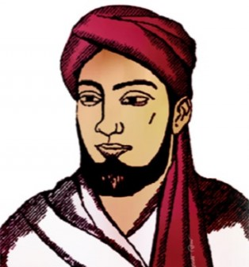

History of Titumir House
Mir Nisar Ali Titumir was a Bengali Muslim leader and revolutionary who fought against British colonialism in the 19th century. He is widely regarded as a national hero in Bangladesh for his contributions to the country’s independence movement. Titumir House of Rangpur Cadet College was named after this legendary Bengali freedom fighter Syed Mir Nisar Ali Titumir to honor his legacy and inspire the cadets to follow in his footsteps. Titumir House has been a symbol of excellence in Rangpur Cadet College. The house has a rich history of academic and extracurricular achievements, and its cadets have made significant contributions to the college and the nation. Here is a picture of the legend Syed Mir Nisar Ali Titumir:

Motto and Emblem
The motto of Titumir House of Rangpur Cadet College is "We are Fearless" and the emblem is a clenched fist. The clenched fist is a symbol of strength, unity, and determination. It represents the unwavering spirit of the cadets of Titumir House who are not afraid to face challenges and overcome obstacles. The motto "We are Fearless" embodies the courage and bravery of the cadets who are trained to be leaders and defenders of their country. Together, the emblem and motto inspire the cadets of Titumir House to strive for excellence and to never give up in the face of adversity. Here is a picture of the emblem:
Activities of Titumir House
We participate in various activities such as sports events, cultural programs, and community service initiatives. Our cadets participate in inter-house competitions and represent Titumir House with pride and passion.